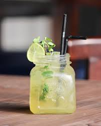

Home
Mojito

Description
The tart juice of limes makes the mojito a bit sharper and more citrusy. You’ll need a simple syrup for this cocktail, which is super-easy to make if you don’t want to buy one. You can even add some mint leaves in with it to make the mint flavor stronger.
Ingredients
- 1/4 cup crushed graham crackersl
- 3 Tbsp. simple syrup, plus more for glass
- 1/4 cup fresh mint leaves, plus more for serving
- 3 Tbsp. fresh Key lime juice
- Ice
- 4 oz. white rum
Steps
- Place crackers on a plate. Pour simple syrup onto another plate. Dip rims of 2 glasses into simple syrup, then into crackers.
- In a cocktail shaker, muddle mint and lime juice.
- Fill glasses with ice and strain mojito into prepared glasses. Garnish with more mint and a lime round.
- Roast the chicken
- Assemnle the shawarma